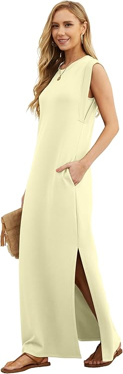
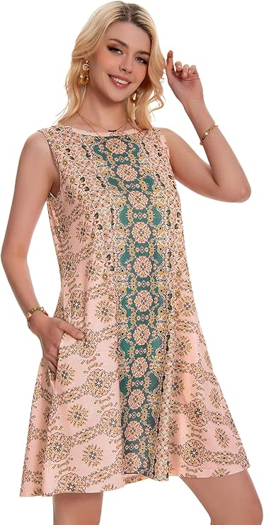
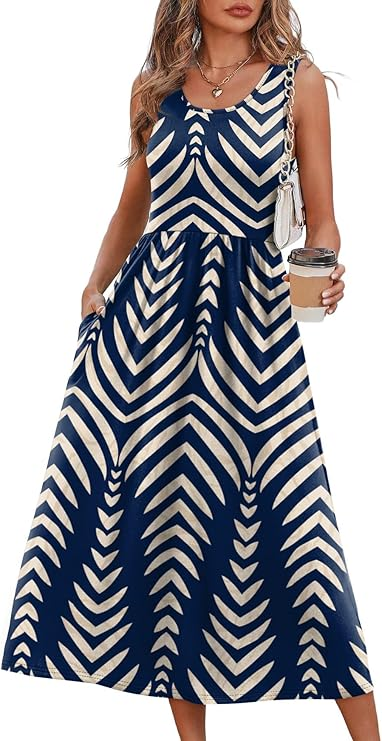
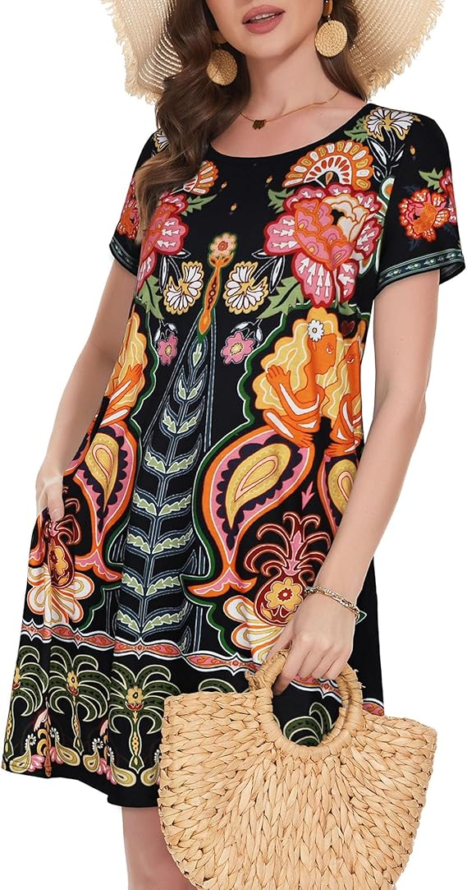
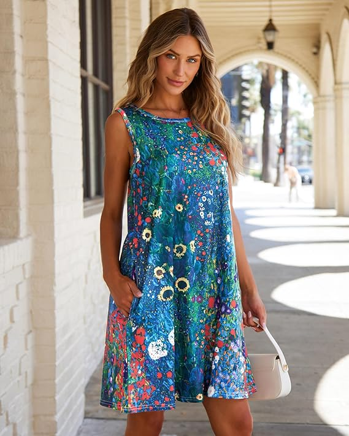
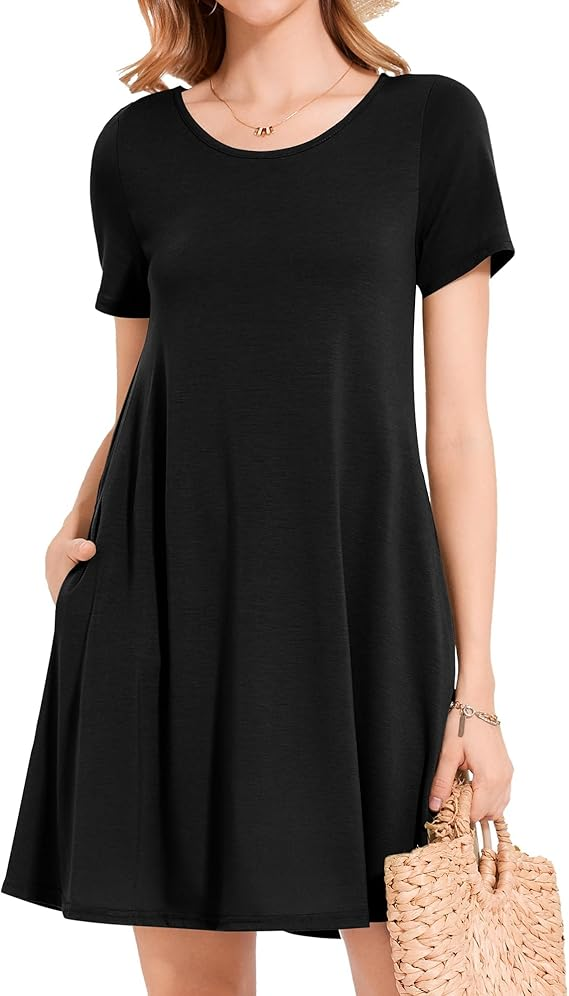
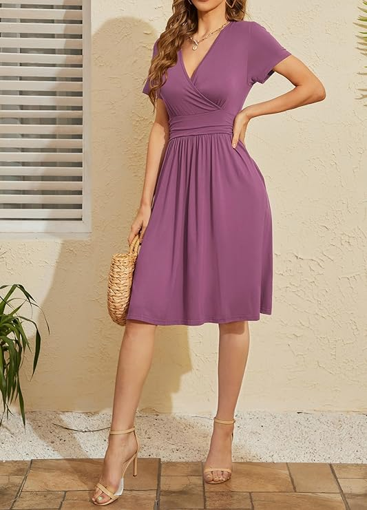
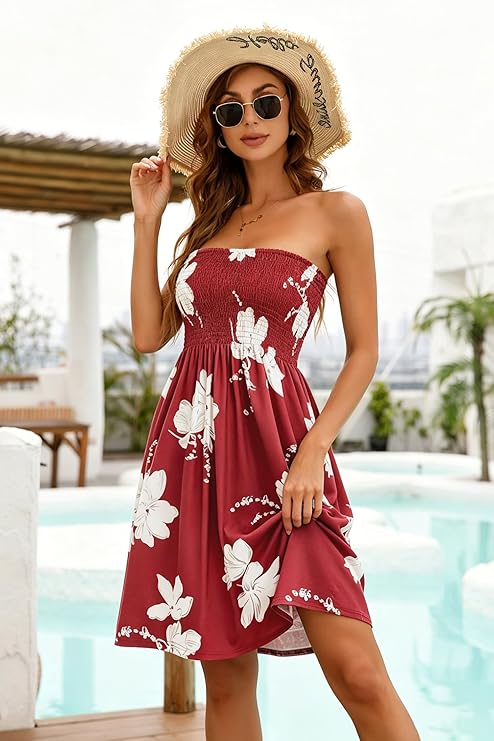
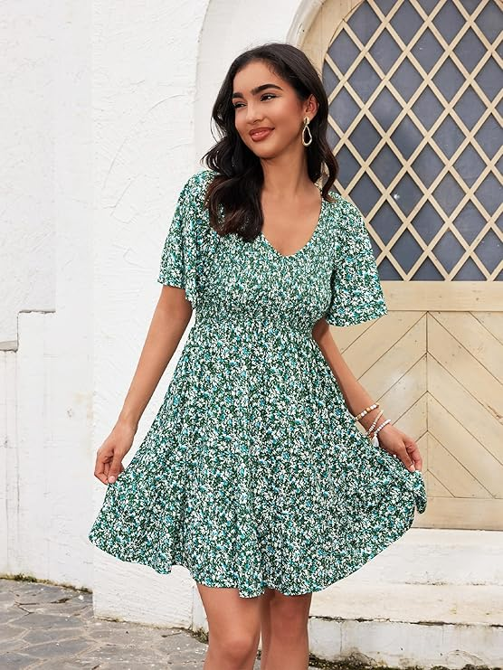
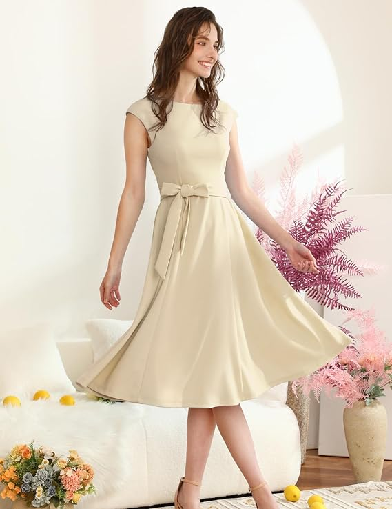

Great Summer Dresses Don't Have to Cost a Fortune
Here's the truth about shopping for summer dresses: the price tag almost never determines how good it looks on. We've seen $150 dresses fall apart after two washes and $28 Amazon finds hold up two seasons later, looking just as good as the day they arrived. What actually matters — fabric weight, cut, print quality, how it handles a warm day — has nothing to do with how much you spend.
For this guide, we personally reviewed ten summer dresses currently available on Amazon, all priced under $50. We looked at silhouette flattery, fabric feel, wash durability, size accuracy, and real-world wearability across different occasions. Every product has a real affiliate link so you can shop directly, and every review is written honestly — including what each dress doesn't do well.
Whether you're after something elegant enough for a garden party, relaxed enough for a farmers market, or bold enough to carry an entire outfit on its own, there's a pick below for you. Let's get into it.
What to Look For: The Quick Buying Guide
Before you scroll to the products, five minutes with this section will save you a return. These are the criteria we used to evaluate every dress on this list — and the ones you should apply to any affordable dress purchase.
1. Fabric Weight and Composition
Lightweight polyester and viscose blends are the most common fabrics at this price point, and neither is automatically a problem. A good polyester weave can be breathable, durable, and wrinkle-resistant. A bad one traps heat and pills after a few washes. Look for listings that specify the fabric percentage — anything that omits it entirely is worth approaching cautiously. Jersey knits (stretchy, textured) generally offer better comfort and fit forgiveness than woven fabrics at budget prices.
2. Silhouette and Your Body Shape
Swing and A-line cuts are the most universally flattering silhouettes at this length and price range because they create room through the hip and thigh without clinging. Bodycon and wrap styles are more figure-specific — excellent for defined waists but less forgiving across the bust or hip. Choose the silhouette you know works for you rather than the one that looks best in the listing photo on a different body type.
3. Size Accuracy Across Different Brands
- Never assume your usual size letter translates across Amazon brands — it rarely does perfectly.
- Read 10–15 reviews from people who mention their measurements or usual size alongside this one.
- If reviews consistently say "runs small," size up by one without hesitation.
- Dresses with elasticated waists or tie belts are the most forgiving and easiest to size.
- If a measurement chart is provided (bust / waist / length), use it — compare against a dress you already love.
4. Print and Colour Quality
Print quality is where cheap dresses most visibly betray their price. Look at the listing photos carefully — if the pattern looks slightly blurry or the colours look oversaturated, it usually means the actual fabric print is lower resolution. The best affordable prints have crisp edges and realistic colour saturation. Products with thousands of customer photos (not just seller photos) give you the most honest preview of what you'll actually receive.
5. Wash and Wear Durability
We machine-washed every dress on this list at 30°C in a mesh bag and air dried. A dress that emerges looking intact is a dress you'll keep wearing. Anything that pilled, faded, or distorted went down in our notes. Durability findings are included in each review below.
Cap Sleeve Belted Midi Dress

This is the dress you didn't know you needed until you see it, and then you immediately understand why it has over eight thousand reviews. The warm ivory colourway is somewhere between cream and champagne — noticeably more sophisticated than a flat white — and the cap sleeve construction gives it a quietly vintage quality that feels intentional rather than dated. The self-tie bow belt is the defining detail: a wide sash made from the same fabric as the dress, tied at the natural waist to create a clean, defined silhouette.
The A-line skirt has real volume and movement. It's not the stiff, structured A-line of a formal occasion dress — it swings naturally when you walk, which makes it feel relaxed despite looking polished. The fabric is a medium-weight stretch scuba blend that holds its shape beautifully and doesn't cling. We wore this to a daytime event, an outdoor lunch, and a casual evening dinner, and it felt appropriate for all three. After a cold machine wash and air dry, it came back looking pristine.
✓ Pros
- Quietly elegant — looks more expensive than it is
- Self-tie belt creates a genuine waist definition
- Stretch scuba fabric holds shape wash after wash
- Works across multiple occasions without restyling
- Warm ivory is universally flattering across skin tones
– Cons
- Light colour means a nude liner or slip is advisable
- Cap sleeve length won't suit everyone's arm preference
- Belt can feel stiff when first worn — softens with use
The go-to pick if you need one dress that can move from a daytime wedding guest situation to a casual summer dinner with minimal effort. Particularly flattering on hourglass and pear body shapes. If you've been looking for something that photographs beautifully without looking like you tried too hard, this is it.
Green Ditsy Floral Mini Dress

Ditsy florals are one of those prints that sound very basic until you see the right execution of one, and the green-and-white version of this dress is the right execution. The print is a genuine small-scale floral with multiple shades of forest and sage green, tiny white blooms, and just enough tonal variation to keep it from looking flat. The V-neckline is deep enough to be flattering without requiring constant adjustment, and the flutter sleeves add a softness that balances the more fitted smocked bodice below.
The smocked waist is a key detail here — it creates a natural gather point that defines the figure without being constricting, and it means the dress fits a genuine range of bust and waist sizes without alterations. The skirt flares out from the smocking into an easy A-line that hits mid-thigh on a 5'6" frame. Light and breezy fabric makes this an excellent choice for genuinely hot days. Wash durability was good — slight loosening of the smock elastication after washing, but nothing that affects fit.
✓ Pros
- Green floral print is more nuanced and elevated than listing suggests
- Smocked bodice fits a wide range of sizes without adjustment
- Flutter sleeves add movement and femininity
- Genuinely lightweight — perfect for peak summer heat
- Mini length feels playful without being inappropriate
– Cons
- Mini length won't suit all occasions or personal preferences
- Smock elastication loosens slightly after repeated washing
- Fabric is sheer in lighter colourways — check before ordering
Perfect for anyone who wants a cheerful, light summer dress that works for a garden brunch, a festival, or a casual day out. The smocked bodice makes it a particularly strong pick for those who find regular sizing inconsistent — the elastication handles a broader fit range than most structured bodices at this price.
Strapless Floral Beach Dress

A strapless smocked dress done right is one of the most effortless things you can wear at a beach destination, and this burgundy floral version does it right. The deep wine-red base with large-scale white botanical blooms is a bolder and more considered combination than the usual pastel florals in this category — it photographs beautifully, it's flattering against a tan, and the scale of the print means it reads as fashion-forward rather than generic. The smocked tube top holds securely without any constant readjusting, which is the test a strapless anything has to pass.
The skirt is a simple A-line that allows free movement and hits comfortably at mid-thigh. The whole dress is designed for easy packing — it rolls into almost nothing, pops back into shape when shaken out, and is lightweight enough to dry quickly after being near water. This is a holiday-specific dress with no pretensions about being anything else, and within its category it genuinely excels.
✓ Pros
- Burgundy-and-white print is genuinely striking and vacation-ready
- Smocked tube holds securely without slipping
- Packs into almost nothing — ideal carry-on dress
- Dries fast and shakes out crease-free
- Strong value for a dress this well-executed at the price
– Cons
- Strapless — not suitable for anyone who needs a bra with straps
- Very specific use case: holiday or beach, not everyday wear
- No pockets (expected for the silhouette, but worth flagging)
For the holiday packer who wants one dress that goes from pool to bar and handles the heat without complaint. Also great as a beach cover-up upgrade from the usual kaftan — this one looks like you got dressed rather than just grabbed something. Best on those comfortable with a strapless silhouette.
Purple V-Neck Wrap Midi Dress

The dusty mauve — properly described as a warm violet-grey — is this dress's defining feature and its biggest selling point. It's an unusual colour for a summer dress category dominated by bright florals and navy stripes, and it's all the more striking for being unusual. Paired with gold accessories (which the model demonstrates perfectly), it has a genuinely elevated quality that exceeds its price point by some margin.
The construction is a faux-wrap style: it looks like a wrap dress with a genuine V opening but is actually held in place by internal fastenings, which means it won't gape or come undone during wear. The ruched gathering at the waistline creates natural definition without needing a belt. The midi length and short sleeves make this office-appropriate in a way that shorter styles aren't, which adds serious mileage to a single purchase. Fabric is a soft jersey that drapes well and recovers its shape from washing reliably.
✓ Pros
- Unusual dusty mauve colour reads as genuinely sophisticated
- Faux-wrap stays closed without adjustment or pinning
- Ruched waist creates flattering definition without a belt
- Office-appropriate length and sleeve coverage
- Soft jersey fabric recovers well from washing
– Cons
- Mauve tone doesn't suit all skin tones equally — check in person if possible
- Midi length can feel restrictive in stride at the narrow end of the cut
- Solid colour means accessories need to do the visual work
The strongest pick on this list for work-to-weekend versatility. If you want a dress that doesn't require you to change outfits between a Thursday afternoon meeting and a Friday evening dinner, this is exactly the kind of piece that bridges that gap. Particularly striking on warmer and olive skin tones.
Classic Black T-Shirt Dress

With over 34,000 reviews, this is the best-reviewed dress on this entire list by a significant margin, and the reason is simple: it does exactly what it promises, every time, without fail. A relaxed crew neck, short sleeves, swing silhouette, knee-ish length, and deep side pockets. There are no tricks, no gimmicks, no interesting details to talk about — and that's precisely the point. This is the dress you reach for when you don't want to think about what you're wearing.
The fabric is a bamboo-jersey blend that's noticeably softer than standard cotton, which is why it has the repeat customer numbers it does. It washes on repeat without pilling or fading, which makes it the most durable item on this list. We own this in three colours and have worn each one more times than we can count. At under $30, buying two and calling it a capsule wardrobe foundation is entirely reasonable.
✓ Pros
- 34,000+ reviews — this one has truly earned its reputation
- Bamboo-jersey is noticeably softer than standard cotton dresses
- Survives heavy washing without pilling, fading, or distortion
- Deep, real side pockets that don't pull the silhouette
- Available in 30+ colours — easy to build a small collection
- Lowest price on this list — exceptional value per wear
– Cons
- No visual interest — this is a deliberately plain dress
- The swing cut can look boxy on very petite frames
- Not suitable for any occasion that requires dressing up
Everyone. Genuinely. If you don't own a reliable, comfortable, pocketed everyday dress that you can wear six days a week without thinking about it, this is the one you've been missing. Buy it in two colours.
Garden Floral Swing Dress

This is the most joyful dress on the list — a full-coverage wildflower garden print in the most literal sense, with sunflowers, dahlias, poppies, and scattered wildflowers across a teal-blue base. It looks like someone painted a cottage garden and then made it wearable, and if that sounds maximalist, it is — in the best way. The print quality here is genuinely exceptional for the price: high resolution, vibrant colours, and clean edge definition that doesn't bleed or blur when you look closely.
The silhouette is a relaxed sleeveless swing that creates space through the body without looking shapeless. The square neckline keeps it feeling current and grounded rather than overly fussy. In person it's even more striking than the listing photo suggests — it's a dress that earns genuine compliments. We wore it to a daytime social event and it outperformed most of the more expensive outfits in the room for sheer visual presence.
✓ Pros
- Print resolution and colour quality is outstanding at this price
- The swing silhouette flatters a wide range of body types
- Earns genuine compliments — high visual impact
- Square neckline feels modern and fashion-forward
- Pockets present and well-integrated
– Cons
- Very bold print — not a background dress, you are the look
- Maximalist styling limits easy pairing with patterned accessories
- Not appropriate for conservative workplaces or formal events
For the person who wants to walk into a summer gathering and immediately look like they have a point of view about fashion. If you love maximalist prints, garden aesthetics, or just want one dress that does all the work so your accessories don't have to, this is it. Also a beautiful pick for anyone who tends to stick to safe neutrals and wants something that pushes them slightly outside that comfort zone.
Boho Paisley Print Dress

The black base makes this one work in a way that a lot of bold-print dresses don't. Orange, red, green, and golden-yellow botanical and paisley motifs on black reads more sophisticated and less loud than the same palette on white or cream — the dark ground absorbs the eye rather than competing with the print, making the flowers feel like they're emerging from shadow. It's a genuinely interesting piece with references to South Asian textile traditions that give it more cultural depth than most mass-market prints achieve.
The relaxed T-shirt silhouette and short sleeve cut keep it casual, which is the right call for a print this busy — a structured bodice would fight the pattern. The fabric is a soft jersey that drapes naturally and pockets are present on both sides. After washing, the print retained its colour vibrancy well, which is the main technical test a bold printed jersey needs to pass and this one passed it.
✓ Pros
- Black base makes the bold print wearable rather than overwhelming
- Print has genuine artistic quality — not a generic tropical repeat
- Colour vibrancy survives machine washing well
- Relaxed silhouette works across body types
- Side pockets on both sides, properly sized
– Cons
- Bold statement piece — not for minimalists or neutral-lovers
- Black fabric absorbs heat more than lighter alternatives
- The print pattern makes it hard to pair with any other bold pieces
For anyone who wants a printed dress that has an actual personality. Particularly strong for outdoor summer events, festivals, and casual creative environments where expressing a visual identity matters. Also an excellent choice for those who love boho or maximalist aesthetics but want the comfort of a basic T-shirt silhouette underneath the print.
Navy Chevron Maxi Dress

The navy and cream chevron zigzag converges at the centre front of this maxi in a way that does something clever: the V-shaped point convergence draws the eye vertically through the centre of the body, creating a natural elongating effect that most horizontal stripe patterns actively undo. It's a flattering trick baked into the geometry of the print itself, and it means the dress looks good on a wider range of body shapes than most maxi dresses at this price.
The elasticated waist and gathered bodice give it shape without constriction — a key win for a maxi, where getting the waist definition right is the difference between looking purposefully dressed and looking like you're wearing a pillowcase. The overall construction quality is solid: even seams, aligned print at the joins, and a hem that held its length after washing. The navy-cream palette extends the dress's usability into cooler months layered under a denim jacket or oversized blazer.
✓ Pros
- Chevron convergence creates a genuinely elongating visual effect
- Elasticated waist provides shape without tightness
- Print aligns correctly at the seams — good construction
- Navy-cream extends usability beyond summer with layering
- Deep pockets don't break the print alignment
– Cons
- Bold geometric print won't appeal to all aesthetics
- Maxi length can drag on the ground for shorter wearers — check length
- Limited colour options in this specific chevron design
The top pick for tall women who struggle to find maxis that hit the right length. Also an excellent choice for anyone who wants a dress with genuine waist definition at a maxi length — notoriously hard to find at this price. If you love graphic, modern prints and want something that works across more than three months of the year, this is your dress.
Mandala Print Sundress

The construction concept here is more interesting than most: rather than a repeat all-over print, this dress uses a central vertical panel of intricate teal and gold mandala work against a blush-pink base fabric. The result is something that reads as intentionally designed rather than just printed — it has the quality of a placed motif, which is a technique you see in much higher-price-point dresses. The contrast between the soft pink and the deep teal-gold is warm and harmonious without being sweet or girlish.
The silhouette is a straightforward sleeveless A-line swing with a round neckline and side pockets, which provides a calm counterpoint to the busy central panel — a good instinct from the designer, since a more structured cut would fight the intricacy of the print. The fabric is a lightweight, slightly textured polyester that behaves well in warm weather and maintained its drape after washing. This is the most quietly individual pick on the list.
✓ Pros
- Central panel placement makes the print feel designed, not just printed
- Blush-and-teal palette is warm, unusual, and flattering
- Lightweight fabric handles warm weather comfortably
- Simple silhouette lets the print do all the work
- Pockets included and positioned correctly
– Cons
- Lowest star rating on this list — sizing reviews are mixed
- The specific colour palette won't suit all complexions equally
- Less widely available in extended sizes than other picks
A strong pick for anyone who wants something that looks thoughtfully chosen rather than randomly ordered. The mandala panel print has a handcrafted quality that most printed dresses at this price don't come close to. Read the sizing reviews carefully for your specific size before ordering — the mixed feedback is almost entirely size-related, not quality-related.
Lemon Sleeveless Slit Maxi Dress

We saved the most refined pick for last. This lemon-yellow sleeveless maxi has a clarity of design that most dresses at this price lack: a clean round neckline, a single front slit, a small chest pocket detail, side pockets, and nothing else. No print, no gathered waist, no superfluous details — just a well-proportioned silhouette in a colour that is genuinely pale and considered rather than the saturated yellow that often reads as childlike. The specific shade sits somewhere between ivory and butter, warm but not overwhelming.
The front slit is practical and proportional — it opens the stride without being attention-grabbing, and it means this maxi is genuinely comfortable to walk in. The chest pocket is a structural detail more than a functional one, adding a crisp tailored quality that elevates the overall look. This is the closest thing to a linen-quality dress on this list without actually being linen — the fabric has a similar clean drape and natural feel. It emerged from washing looking fresh and untouched.
✓ Pros
- Understated design with genuine elegance — looks expensive
- Lemon shade is warm and wearable, not harsh or childlike
- Front slit improves wearability without being a fashion statement
- Chest pocket detail adds tailored quality above the price point
- Both side pockets and chest pocket — unusually generous
- Linen-quality drape from a non-linen fabric that washes better
– Cons
- Pale yellow can wash out very fair complexions — check in daylight
- Minimalist design requires accessories to avoid looking underdressed
- Maxi length not suited to petite frames without a height check first
For the minimalist who's been waiting for a dress this list could offer them. If your aesthetic leans toward neutral tones, clean lines, and quality over decoration, this is the only pick here that truly speaks your language. Also a brilliant choice for warm and medium skin tones where the lemon shade creates a beautiful contrast. Dress it up with gold jewellery and block sandals — no other work required.
Frequently Asked Questions
Yes — with some caveats. The best Amazon casual dresses offer exceptional value for money, particularly when they have thousands of verified reviews with specific fit and quality feedback. The key is knowing what to look for in a listing and in the reviews. Avoid anything with fewer than 500 reviews, no listed fabric content, and no customer photos. The picks on this list all have substantial review histories and real evidence of quality in the customer feedback.
Never rely on your usual size letter alone when buying from Amazon — brands size differently and sometimes inconsistently within the same brand. Read 10–15 reviews from people who mention their height, weight, or usual size and how this specific dress compared. Where a measurement chart is provided (bust, waist, length in inches), use it and compare against a dress you already own and love. For stretchy jersey styles like most picks on this list, sizing up by one is rarely a mistake and is often specifically recommended in the reviews.
Some of them, yes. Dress 1 (the cap sleeve belted midi in ivory) and Dress 4 (the purple V-neck wrap midi) are both suitable for a casual or garden wedding as a guest, especially accessorised well. Dress 10 (the lemon maxi) can also work for an outdoor daytime event. The more casual picks — the black T-shirt dress, the boho paisley, the beach strapless — are not appropriate for formal occasions and aren't trying to be. Match the dress to the dress code, not just the vibe.
Machine wash cold inside-out in a mesh laundry bag, then air dry flat or on a hanger. Avoid tumble drying on high heat — it's the primary cause of pilling, shrinkage, and print degradation in the polyester and viscose fabrics most of these dresses use. For printed dresses, washing inside-out protects the surface of the print from abrasion. Stored hanging rather than folded, all ten of these dresses should look good across multiple seasons of regular wear.
Dresses 2 (the green ditsy floral mini), 3 (the strapless beach dress), and 5 (the black T-shirt dress) all hit at a length that works well for petite frames. The maxi dresses (8 and 10) may be too long without hemming — always check the listed dress length against your height before ordering. The swing and A-line silhouettes (1, 6, 9) can sometimes look voluminous on very petite frames — adding a thin belt at the waist helps enormously if you still want one of those styles.
For the casual picks (dress 5, 7), flat sandals or clean trainers match the register. For the elevated styles (dress 1, 4, 10), a block heel or low strappy sandal lifts the look appropriately. Maxis (dress 8, 10) work particularly well with flat slides or flip-flops because the length does the visual work. The strapless beach dress (3) is designed to be worn barefoot or in flip-flops — it's a poolside dress and the footwear should reflect that. When in doubt: less structured dress, more casual shoe.
Final Verdict
After reviewing ten dresses across every summer category — elegant midis, casual T-shirt styles, beach ready minis, bold prints, and refined maxis — here's the honest short version: buy the one that matches your actual life, not the aspirational version of it.
If you need one dress that genuinely does everything, the cap sleeve belted midi in ivory (dress 1) is the most versatile pick here. If you want the most-worn, most-washed, most-loved purchase for everyday use, the black T-shirt dress (dress 5) has 34,000 people who will back that recommendation. For the boldest look with the highest visual return, the garden floral swing dress (dress 6) is genuinely special. And if your aesthetic is clean, minimal, and quietly confident, the lemon slit maxi (dress 10) is the one you've been waiting for.
Every single one of these dresses is available right now on Amazon with fast shipping and free returns. At these prices, there's no reason to spend another summer in dresses that don't make you feel great.
Most Versatile — Cap Sleeve Belted Midi (Dress 1)
Best Everyday — Black T-Shirt Dress (Dress 5)
Most Striking — Garden Floral Swing (Dress 6)
Most Elegant — Lemon Slit Maxi (Dress 10)
All prices correct at time of writing and subject to change. This post contains affiliate links — we earn a small commission if you purchase through them, at no cost to you. Every pick was evaluated independently.